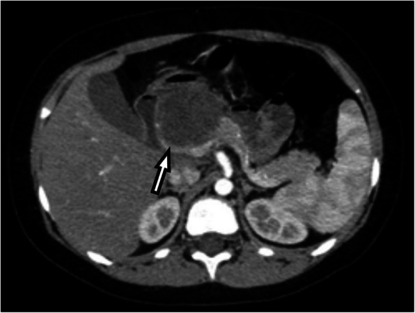
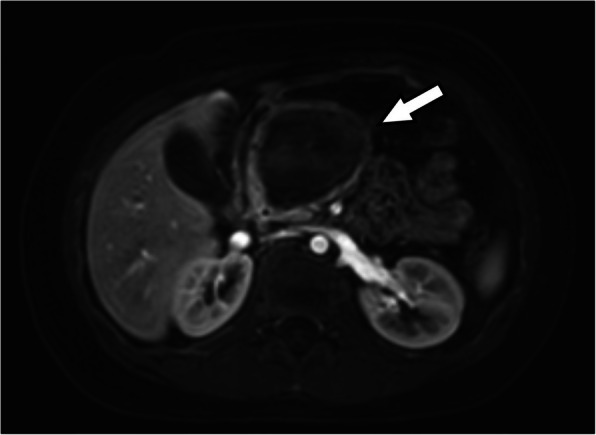
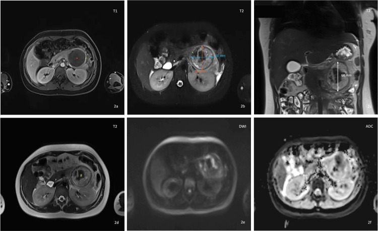
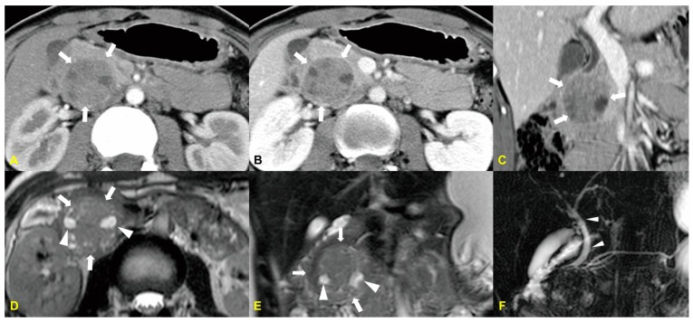

6120 — U tụy ở trẻ: u đặc–nhầy nhú (SPN), u nguyên bào tụy (pancreatoblastoma), IPMN nhánh và cạm bẫy "nang giả"
Tags: pattern:khoi-tuy pattern:dac-nang-hon-hop pattern:xuat-huyet-trong-u pattern:voi-hoa pattern:di-can-phuc-mac vung:tuy vung:o-bung vung:tinh-mach-lach protocol:MRI-bung-co-tuong-phan protocol:CT-3-thi protocol:sieu-am-Doppler protocol:EUS-FNA score:Ki-67
Mức chắc chắn (certainty): tổng hợp y văn (literature synthesis) — ghép ca bé trai 9 tuổi u đặc–nhầy nhú (SPN) ở mỏm móc tụy (J Egypt Natl Canc Inst 2025, PMC13313416), ca bé gái 11 tuổi SPN đuôi tụy được cắt thân–đuôi giữ lách qua nội soi (Cureus 2026, PMC12949481), ca 18 tuổi u nguyên bào tụy trong bài tổng quan hình ảnh–mô bệnh (Medicina 2024, PMC11596154), đoàn hệ 32 trẻ SPN với chiến lược chọn lọc giữ nhu mô tụy (PLoS One 2026, PMC13561321), khảo sát toàn quốc Nhật 213 trẻ (World J Gastrointest Oncol 2024, PMC11514659), đoàn hệ SEER 195 trẻ (BMC Gastroenterol 2024, PMC10941481), 48 trẻ mổ u tụy một trung tâm (Front Pediatr 2025, PMC12198236) và so sánh CEUS SPN vs u nguyên bào tụy (Diagnostics 2026, PMC12896552).
Câu hỏi thực hành: bé trai 9 tuổi, đau bụng âm ỉ + sờ thấy khối vùng thượng vị; siêu âm có khối 48 × 48 × 50 mm ở ranh giới đầu–thân tụy, bờ không đều, không thấy tăng sinh mạch trong khối; CT có cản quang: khối giảm tỷ trọng không đồng nhất, KHÔNG ngấm thuốc; MRI: khối hỗn hợp nang 55 × 51 × 48 mm, có vỏ bao. Câu hỏi: khối này là nang giả tụy sau một đợt viêm tụy không được chẩn đoán, hay u thật? nếu là u thì cắt giữ lách hay bỏ lách? vì sao phải theo dõi nhiều năm dù "u lành"? Bài chốt bốn việc: (1) u tụy ở trẻ hiếm nhưng gần như luôn phải mổ — "nang giả" không có tiền sử viêm tụy/chấn thương phải coi là u cho tới khi mô bệnh học chứng minh ngược lại; (2) SPN có chữ ký hình ảnh: khối lớn, vỏ bao xơ, đặc–nang, xuất huyết trong u, ngấm thuốc tiến triển; (3) ở thân/đuôi tụy, cắt thân–đuôi giữ lách là lựa chọn ưu tiên nhưng phải theo dõi tĩnh mạch lách; (4) u nguyên bào tụy (PB) là u ác thật ở trẻ nhỏ — khác hoàn toàn về tuổi, Ki-67 và tiên lượng. Nối 6115 – Tăng áp cửa phía trái do tắc tĩnh mạch lách, 135 – Viêm tụy cấp theo Atlanta, 136 – U nang tụy.
1. Tổng quan bệnh học – cơ chế hình ảnh: tại sao u đặc lại "tan thành nang"
- Dịch tễ – bức tranh tổng thể: u tụy ở trẻ rất hiếm. U đặc–nhầy nhú (solid pseudopapillary neoplasm, SPN) có tỉ lệ mắc 0,1–0,2/1 triệu trẻ/năm, chiếm 0,9–2,7% u ngoại tiết tụy và ~5% u nang tụy, nhưng lại là u tụy thường gặp nhất ở trẻ có tiềm năng ác tính (PLoS One 2026, PMC13561321). Trong 213 trẻ mổ u tụy ở Nhật (2000–2021): SPN 77,0% (164), u nguyên bào tụy (pancreatoblastoma, PB) 7,5% (16), u nội tiết 6,6% (14), u không biểu mô 4,2% (9) (PMC11514659). Trong 195 trẻ của SEER (1975–2018): u thần kinh nội tiết 33,8%, SPN 32,3%, PB 11,3%, khác 22,6%; tuổi trung vị 16; 30,3% đã có di căn xa lúc chẩn đoán; 69,7% được mổ; sống 1/3/5 năm 90,3% / 79,2% / 77,7% (BMC Gastroenterol 2024, PMC10941481).
- TẠI SAO SPN vừa đặc vừa nang: u khởi đầu là khối đặc; khi lớn lên, mạch máu nuôi không theo kịp → thoái hóa nang, xuất huyết trong u, hoại tử, hình thành cấu trúc nhú giả (pseudopapillae) trên các trụ xơ–mạch. Vì vậy tỉ lệ đặc/nang thay đổi theo kích thước: u < 3 cm có thể đặc hoàn toàn và chưa có vỏ bao**, u lớn thì **nang hóa + xuất huyết** rõ; **vỏ bao xơ gần như luôn có khi u > 3 cm (Diagnostics 2023, PMC10046973).
- TẠI SAO tín hiệu MRI lại "kỳ quặc" — giải thích bằng vật lý:
- T1 tăng tín hiệu trong u = máu xuất huyết (methemoglobin nội bào) — đây là dấu hiệu gần như đặc trưng; xuất huyết trong u gặp 29% đến 88,9% ca.
- T2 hỗn hợp, có vùng rất sáng = dịch và máu cũ; có thể thấy mức dịch–dịch (fluid–fluid level).
- Vỏ bao xơ T1 và T2 đều TỐI, ngấm thuốc muộn = collagen/fibrosis (rất ít proton tự do → tối trên mọi chuỗi, đối quang đọng lại trong mô đệm xơ → sáng muộn). Trong khi đó thành nang giả tụy cũng tối nhưng mỏng đều và không có phần đặc bên trong.
- Ngấm thuốc TIẾN TRIỂN (progressive): phần đặc ngấm ít ở thì động mạch, tăng dần ở thì cửa–muộn vì mô đệm xơ giữ thuốc — ngược với u thần kinh nội tiết (NET) ngấm rất mạnh và sớm ở thì động mạch.
- DWI: phần đặc hạn chế khuếch tán nhẹ (ADC không tối như ung thư biểu mô ống tụy); phần nang/hoại tử không hạn chế — nên DWI âm KHÔNG loại trừ SPN (ca 11 tuổi: b = 1500 s/mm² không hạn chế thật — PMC12949481).
- Số liệu định lượng phải thuộc:
- Vôi hóa: tới 30%, hay gặp ở u lớn, đủ kiểu (ngoại vi, trung tâm, thô, lấm tấm) — vôi hóa không loại trừ và không khẳng định ác tính.
- Ác tính thật 10–15%; di căn xa tới 15% (gan, phúc mạc, hạch) — có thể xuất hiện nhiều năm sau mổ; tái phát 2–10%; khỏi bệnh tới ~90% sau cắt trọn (PMC10046973; PMC13561321).
- Dấu hiệu gợi ác tính trên hình ảnh: giãn ống tụy chính, ôm/bóp mạch (vessel encasement), di căn, mất liên tục vỏ bao khu trú, bờ đa cung (lobulated). Kích thước, vị trí, độ dày vỏ, kiểu vôi hóa KHÔNG khác biệt giữa lành và ác (PMC10046973).
- PB khác SPN về sinh học: PB là u ác thật của trẻ nhỏ — trong so sánh CEUS 22 trẻ: tuổi trung bình 2,94 tuổi (PB) vs 13,51 tuổi (SPN), Ki-67 30% vs 5%, cường độ đỉnh IMAX 179,84% vs 60,56%, tốc độ thải 773,88 vs 275,38, và 100% PB có dấu "mạch nuôi hỗn loạn" (disorganized nourishing vessels) (Diagnostics 2026, PMC12896552). AFP có thể tăng — ca 14 tuổi AFP 395 ng/mL, ca 4 tuổi AFP 1210 ng/mL kèm NSE 51,2 ng/mL (Front Oncol 2025, PMC12672239).
- Tiên lượng thực tế: trong 48 trẻ mổ u tụy, 45 (93,75%) còn sống không bệnh sau theo dõi trung vị 8,2 năm; 2 ca PB tử vong và 1 ca ung thư tụy tử vong (Front Pediatr 2025, PMC12198236) — tức là "u tụy ở trẻ" không đồng nghĩa lành tính, và PB là thủ phạm chính của tử vong.

Bé trai 9 tuổi, khối 48 × 48 × 50 mm ở ranh giới đầu–thân tụy, bờ không đều, giảm tỷ trọng không đồng nhất, KHÔNG ngấm thuốc (mũi tên). Điểm cần nhớ: "không ngấm thuốc" không có nghĩa là nang giả — SPN có mô đệm xơ và hoại tử nên phần lớn khối có thể giảm tỷ trọng; phải đọc thêm MRI T1/T2 để tìm máu trong u và vỏ bao. Nguồn: Journal of the Egyptian National Cancer Institute 2025 (PMC13313416), CC BY 4.0, nguyên bản.
Cùng bệnh nhi trên MRI: khối hỗn hợp nang 55 × 51 × 48 mm ở đầu–thân tụy, bờ rõ, có vỏ bao — kích thước trên MRI lớn hơn so với CT (55 vs 48 mm) vì MRI nhạy hơn với thành phần nang/dịch. Chẩn đoán sau mổ: u đặc–nhầy nhú (SPN) của mỏm móc tụy. Nguồn: Journal of the Egyptian National Cancer Institute 2025 (PMC13313416), CC BY 4.0, nguyên bản.2. Mẫu hình + chẩn đoán phân biệt theo tuổi và theo hình thái (gamut)
- Gamut theo tuổi (trục mạnh nhất ở trẻ):
- < 5 tuổi: u nguyên bào tụy (PB) — u ác thật, thường đặc–nang, hoại tử trung tâm; nang giả tụy sau viêm tụy/chấn thương; u quái, lymphangioma, nang bẩm sinh; u nguyên bào thần kinh di căn tụy (hiếm).
- 5–10 tuổi: PB (giảm dần), SPN (bắt đầu tăng), nang giả tụy, lymphoma (thường đa ổ + hạch).
- > 10 tuổi – vị thành niên: SPN chiếm ưu thế tuyệt đối (nữ ≫ nam), IPMN nhánh (rất hiếm), u nội tiết (NET), ung thư biểu mô ống tụy (hầu như không gặp).
- Gamut theo hình thái trên MRI/CT:
- Đặc hoàn toàn: SPN nhỏ (< 3 cm, chưa có vỏ), NET, lymphoma, ung thư biểu mô tuyến nang (acinar cell carcinoma), PB ít nang.
- Đặc–nang có vỏ: SPN (điển hình), PB (hoại tử trung tâm), u quái trưởng thành.
- Nang "trơn" không có phần đặc: nang giả tụy, nang bẩm sinh, lymphangioma — nhưng nang giả có thể trông "đặc" (pitfall ở trẻ 3 tuổi).
- Nang có nốt/thành phần đặc bám thành: IPMN nhánh, u nhầy nhú trong ống, SPN thể chủ yếu nang.
- Gamut theo vị trí: đầu tụy → PB, SPN, ung thư biểu mô (hay vàng da vì chèn ống mật chủ); thân/đuôi → SPN, nang giả, NET. Trong đoàn hệ 32 trẻ SPN: đầu tụy 46,8% (15/32), thân/đuôi 53,2% (17/32) — không có vị trí nào "an toàn".
- Mẫu hình kinh điển cần nhớ: bé gái vị thành niên + khối tụy lớn, bờ rõ, đặc–nang, có máu trong u, không giãn ống tụy, không vàng da, xét nghiệm bình thường → SPN. Nhưng bé trai 9 tuổi trong bài cũng là SPN — không được dùng giới/tuổi để loại trừ.
3. Bảng so sánh phân biệt (ma trận đối chiếu)
| Thực thể (entity) | Hình ảnh điển hình | Chốt vào (rule-in) | Chốt loại (rule-out) | Gợi ý xác nhận |
|---|---|---|---|---|
| SPN (u đặc–nhầy nhú) | Khối lớn, bờ rõ, vỏ bao xơ T1/T2 tối, đặc–nang, T1 sáng do máu, ngấm thuốc tiến triển, vôi hóa tới 30% | Máu trong u (T1 sáng) + vỏ bao xơ + ngấm thuốc tiến triển ở bé gái > 10 tuổi | Giãn ống tụy chính + bóp mạch + di căn → nghi ác/không điển hình, cân nhắc PB/ung thư | MRI bụng (T1 FS trước/sau, T2 FS, DWI, MRCP); mô bệnh + β-catenin, CD56, synaptophysin dương; chromogranin âm |
| U nguyên bào tụy (PB) | Khối đặc–nang, hoại tử trung tâm, bờ rõ, có thể vôi hóa; trẻ < 5 tuổi | Tuổi nhỏ (TB 2,94) + Ki-67 cao (30%) + mạch nuôi hỗn loạn trên CEUS + AFP tăng | Bé gái > 10 tuổi, Ki-67 thấp, không có mạch nuôi hỗn loạn → không phải PB | AFP, CEUS, mô bệnh; hóa trị tân bổ + mổ |
| IPMN nhánh (nhánh ống tụy) | Nang thông với ống tụy chính, nốt đặc bám thành, ống tụy không giãn quá mức | Thấy rõ thông nang–ống tụy trên MRCP | Không thông với ống tụy, có vỏ bao xơ dày → SPN | MRCP/EUS; theo dõi định kỳ nếu không có dấu hiệu nguy cơ |
| Nang giả tụy | Nang thành mỏng đều, không có phần đặc, không vỏ bao xơ dày; thường sau viêm tụy/chấn thương | Tiền sử viêm tụy/chấn thương + amylase/lipase tăng + nang không có phần đặc | Không tiền sử + có phần đặc/vỏ bao → coi là u | Amylase dịch nang (nếu chọc), theo dõi 6–8 tuần; không hết thì mổ chẩn đoán |
| NET tụy | Khối đặc ngấm thuốc rất mạnh thì động mạch, có thể vôi hóa, không có vỏ bao xơ đặc trưng | Ngấm mạnh–sớm thì động mạch + hội chứng nội tiết (insulinoma) | Ngấm thuốc tiến triển muộn, T1 sáng do máu → SPN | CT 3 thì/CEUS, xét nghiệm hormone, DOTATATE |
| Lymphoma tụy | Khối đồng nhất, giảm ngấm nhẹ, thường nhiều ổ + hạch lớn + lách, không vỏ bao | Nhiều ổ + hạch + đáp ứng nhanh với hóa trị | Một khối đơn độc có máu trong u + vỏ xơ → SPN | Sinh thiết, PET-CT, LDH |
| SPN đã vỡ | Máu/dịch quanh tụy, thâm nhiễm mỡ, dịch phúc mạc, khối > 10 cm xâm lấn mô quanh tụy | Vỡ tự phát/sau chấn thương + khối > 10 cm + xâm lấn mô quanh | Khối nhỏ, vỏ liên tục, không dịch phúc mạc → chưa vỡ | CT/MRI cấp; mổ + đánh giá phúc mạc kỹ, theo dõi dài |
- Không tạo ảnh ghép: 3 ảnh thuộc 3 bệnh nhân khác nhau và 2 loại u khác nhau (SPN mỏm móc ở bé trai 9 tuổi; SPN đuôi tụy ở bé gái 11 tuổi; u nguyên bào tụy ở 18 tuổi) — ghép cạnh nhau dễ khiến người đọc tưởng cùng một ca.
4. Protocol chụp + chọn mổ + theo dõi
- Siêu âm bụng (đầu tay, không bức xạ): xác định khối, vị trí, thành phần đặc/nang, có vỏ hay không, khảo sát ống tụy và tĩnh mạch lách/tĩnh mạch cửa (vì u đuôi tụy có thể chèn/huyết khối tĩnh mạch lách → 6115).
- MRI bụng có cản quang là chuẩn để đặc trưng hóa khối đặc–nang ở trẻ (không bức xạ, đa chuỗi):
- T1 in-phase/out-of-phase + T1 fat-sat TRƯỚC tiêm → tìm máu (T1 sáng) và mỡ (mất tín hiệu khi fat-sat).
- T2 fat-sat → mức dịch–dịch, phần nang, vỏ bao tối.
- DWI b = 800–1500 + ADC → đặc trưng phần đặc; âm tính không loại trừ.
- MRCP 3D → nang có thông với ống tụy không (chốt IPMN nhánh).
- Sau tiêm: thì động mạch / tĩnh mạch cửa / muộn 3–5 phút → kiểu ngấm thuốc tiến triển của SPN vs ngấm mạnh–sớm của NET.
- CT bụng 3 thì, lát ≤ 1 mm khi MRI không khả thi/gây mê không thuận lợi, hoặc để đánh giá vôi hóa, mạch máu, di căn phổi (CT ngực liều thấp nếu nghi PB/di căn).
- EUS ± FNA/FNB: dành cho khối không điển hình, không mổ được, hoặc khi chẩn đoán sẽ đổi cách mổ. Không chọc thường quy khối điển hình còn mổ được — chọc qua dạ dày có nguy cơ rò tụy và gieo mầm đường chọc (quan điểm đang tranh luận; đoàn hệ 32 trẻ không sinh thiết trước mổ với tổn thương điển hình — PMC13561321).
- Mô bệnh học là chốt cuối: SPN dương β-catenin (nhân), CD56, cyclin D1, synaptophysin; âm chromogranin; Ki-67 thấp (~5%) giúp tách khỏi PB (~30%).
- Chọn mổ — nguyên tắc "cắt trọn + giữ chức năng":
- Thân/đuôi tụy: cắt thân–đuôi giữ lách (spleen-preserving distal pancreatectomy) — hai kỹ thuật: bảo tồn mạch lách (Kimura) hoặc cắt mạch lách, giữ tuần hoàn qua mạch máu ngắn (Warshaw). Trong đoàn hệ 32 trẻ: 59,4% (19/32) được mổ giữ nhu mô; 12 ca cắt thân–đuôi, trong đó 9 ca giữ lách.
- Đầu tụy: cắt tá tụy (pancreaticoduodenectomy) hoặc bóc u (enucleation) chọn lọc — nhưng bóc u ở đầu tụy có nguy cơ rò tụy và bờ sát (R1): trong đoàn hệ trên, toàn bộ 5 biến chứng sớm đều ở u đầu tụy, 1 ca rò tụy độ C phải mổ lại, R0 chỉ 65,6%, và 1 ca tái phát tại chỗ sau bóc u đầu tụy R1 phải cắt tá tụy.
- PB: u ác thật → hóa trị (thường tân bổ) + cắt trọn, không "theo dõi".
- JP: cắt lách chỉ khi mạch lách không bảo tồn được hoặc u xâm lấn; nếu cắt lách → tiêm phòng phế cầu, não mô cầu, Hib trước mổ và nhắc lại mỗi 5 năm (nguy cơ OPSI).
- Thuật toán xử trí khối tụy ở trẻ:
flowchart TD
A[Khoi tuy o tre tren sieu am] --> B{Co tien su viem tuy hoac chan thuong?}
B -->|Co| C[Nang gia tuy: amylase, theo doi 6-8 tuan]
B -->|Khong| D[MRI bung: T1 FS, T2 FS, DWI, MRCP, 3 thi sau tiem]
C -->|Khong giam hoac co phan dac| D
D --> E{Tuoi va Ki-67 / AFP?}
E -->|Nho hon 5 tuoi, AFP tang, Ki-67 cao| F[U nguyen bao tuy: hoa tri tan bo + cat tron]
E -->|Lon hon 10 tuoi, hinh anh SPN| G{Vi tri u?}
G -->|Than hoac duoi| H[Cat than-duoi giu lach]
G -->|Dau tuy| I[Cat ta tuy hoac boc u chon loc]
H --> J[Theo doi: sieu am Doppler tinh mach lach + MRI 6-12 thang]
I --> J
F --> J
J --> K{Tai phat hoac di can?}
K -->|Co| L[Mo lai hoac hoa tri]
K -->|Khong| M[Theo doi dai han it nhat 5 nam]
- Theo dõi sau mổ (ghi vào giấy ra viện): siêu âm bụng + Doppler tĩnh mạch lách 6–12 tháng/lần trong 2 năm đầu (vì cắt thân–đuôi giữ lách có thể gây hẹp/huyết khối tĩnh mạch lách → tăng áp cửa phía trái), MRI bụng hằng năm trong 3–5 năm, rồi 2–3 năm/lần tới ít nhất 10 năm vì di căn có thể xuất hiện nhiều năm sau; theo dõi đái tháo đường/thiếu men tụy ngoại tiết (trong đoàn hệ: không ca nào suy nội tiết rõ, 11/26 ca thiếu men ngoại tiết thoáng qua và hồi phục hết).

Bé gái 11 tuổi, khối 68 × 60 × 58 mm ở đuôi tụy: (2a) T1 fat-sat sau tiêm — ngấm thuốc ngoại vi nhẹ; (2b) T2 fat-sat — mất liên tục vỏ bao phía trước–trong kèm thâm nhiễm mỡ quanh tụy (dấu viêm/hoại tử); (2d) T2 — tín hiệu hỗn hợp; (2e–2f) DWI b = 1500 + ADC — không hạn chế khuếch tán thật. Bài học: DWI âm không loại trừ SPN; và vỏ bao mất liên tục + thâm nhiễm quanh tụy là dấu hiệu cần đọc kỹ trước mổ. Nguồn: Cureus 2026 (PMC12949481), CC BY 4.0, nguyên bản.5. Biến thể bình thường và cạm bẫy
- Cạm bẫy số 1 — SPN bị chẩn đoán là "nang giả tụy": bé gái 11 tuổi có khối tụy được chẩn đoán nang giả tụy, sau đó mô bệnh học là SPN (JPGN Reports 2026, PMC13150970). Quy tắc an toàn: nang tụy ở trẻ KHÔNG có tiền sử viêm tụy hoặc chấn thương → coi là u cho tới khi chứng minh ngược lại; nang không nhỏ đi sau 6–8 tuần → mổ chẩn đoán.
- Cạm bẫy số 2 — chiều ngược lại: nang giả tụy trông "đặc": bé gái 3 tuổi có khối cạnh dạ dày giảm âm, không đồng nhất, đứng yên 8 tháng, amylase/lipase bình thường, không tiền sử bệnh tụy → mổ và mô bệnh là nang giả tụy (Case Rep Pediatr 2026, PMC13266080). Vì vậy "nang giả" và "u" có thể tráo hình ảnh cho nhau ở cả hai chiều — mô bệnh học mới là chốt.
- SPN nhỏ (< 3 cm) đặc hoàn toàn, KHÔNG có vỏ bao → rất dễ bị đọc thành ung thư biểu mô ống tụy (PDAC) hoặc NET; ở trẻ, PDAC gần như không gặp — đừng đưa PDAC lên đầu danh sách chỉ vì khối đặc (PMC10046973).
- Vôi hóa trong u không phân biệt lành/ác: tới 30% SPN có vôi hóa; không dùng vôi hóa để loại trừ, cũng không dùng để khẳng định.
- Vỡ u (ruptured SPN) — biến chứng âm thầm: loạt 7 trẻ trong 20 năm: tất cả là nữ, tuổi trung vị 12, kích thước trung vị 7,4 cm, 57,1% vỡ sau chấn thương, 42,9% tự phát; 71,4% được cắt thân–đuôi; 71,4% (5/7) bị nghi tái phát nhưng chỉ 28,6% (2/7) xác nhận tái phát phúc mạc, cả 2 đều u > 10 cm có xâm lấn mô quanh tụy (Front Pediatr 2025, PMC12823964). Bài học: đừng gọi "tái phát" chỉ vì hình ảnh đám mờ sau mổ, nhưng u > 10 cm + xâm lấn mô quanh tụy phải theo dõi sát.
- Giữ lách không phải "miễn phí": cắt thân–đuôi giữ lách vẫn có thể hẹp/huyết khối tĩnh mạch lách → tăng áp cửa phía trái, giãn tĩnh mạch dạ dày, lách to tiến triển — đúng bối cảnh bài 6115 (ca 12 tuổi phải cắt lách sau 9 tháng dù đã giữ lách khi mổ u). Vì vậy theo dõi Doppler tĩnh mạch lách là bắt buộc, không phải tùy chọn.
- Cắt lách = nguy cơ OPSI suốt đời: tiêm phòng phế cầu, não mô cầu, Hib trước mổ, nhắc lại mỗi 5 năm, và dự phòng kháng sinh khi sốt ở trẻ nhỏ.
- Đừng bỏ sót PB vì "bé gái tuổi lớn là SPN": PB gặp ở trẻ nhỏ, Ki-67 cao, AFP có thể tăng, mạch nuôi hỗn loạn trên CEUS, và có thể di căn — bỏ sót dẫn tới mổ mà không hóa trị (2/12 ca PB tử vong trong đoàn hệ 48 trẻ — PMC12198236).
- Đừng chọc hút mọi khối: FNA không làm thay đổi kế hoạch mổ ở tổn thương điển hình, nhưng có thể gây rò tụy và gieo mầm đường chọc — chỉ làm khi kết quả sẽ đổi cách xử trí.
Ca 3 (quiz dưới) — lưu ý đọc ảnh: u nguyên bào tụy trên CT/MRI thường đặc–nang, bờ rõ, có hoại tử trung tâm và có thể vôi hóa; điểm phân biệt với SPN không nằm ở hình thái mà ở tuổi, AFP, Ki-67 và mạch nuôi.
6. Tự lượng giá — Blind Quiz ngay trên trang tĩnh
Ca 1 — Bé trai 9 tuổi, đau bụng âm ỉ + khối thượng vị. Nhìn CT rồi MRI, mô tả trước khi mở đáp án.
- Gợi ý lâm sàng (clinical context): 9 tuổi, nam, đau bụng âm ỉ, sờ thấy khối; không vàng da, amylase/lipase bình thường, không tiền sử viêm tụy/chấn thương.
- Câu hỏi: (1) Mô tả khối trên CT và MRI (kích thước, tỷ trọng/tín hiệu, ngấm thuốc, vỏ bao)? (2) Vì sao CT "không ngấm thuốc" mà vẫn là u thật? (3) Ba chẩn đoán phân biệt? (4) Nếu u ở mỏm móc/đầu tụy thì chọn mổ gì?
Bấm để hiện đáp án (findings + chẩn đoán)
- Findings: CT — khối 48 × 48 × 50 mm ranh giới đầu–thân tụy, bờ không đều, giảm tỷ trọng không đồng nhất, không ngấm thuốc rõ (mũi tên). MRI — khối hỗn hợp nang 55 × 51 × 48 mm, bờ rõ, có vỏ bao; kích thước lớn hơn trên MRI vì thành phần nang/dịch.
- Vì sao "không ngấm thuốc" vẫn là u: phần lớn khối là hoại tử/nang và mô đệm xơ — mô đệm xơ ngấm muộn, nên thì động mạch/CT thường gần như không thấy ngấm; phải đọc T1 trước tiêm (máu), T2 (mức dịch–dịch) và thì muộn.
- Chẩn đoán (diagnosis): u đặc–nhầy nhú (SPN) của mỏm móc tụy — khối lớn, vỏ bao, đặc–nang ở trẻ; xác nhận bằng mô bệnh (β-catenin nhân dương, chromogranin âm, Ki-67 thấp).
- Phân biệt: nang giả tụy (không tiền sử, có vỏ/ phần đặc → không phải), u nguyên bào tụy (trẻ nhỏ, Ki-67 cao, AFP tăng), NET tụy (ngấm mạnh thì động mạch), IPMN nhánh (thông với ống tụy).
- Chọn mổ: bóc u (enucleation) hoặc cắt tá tụy chọn lọc ở đầu tụy — nhưng nhớ nguy cơ rò tụy và R1 cao hơn ở đầu tụy (5/5 biến chứng sớm của đoàn hệ 32 trẻ đều ở u đầu tụy).
- Nguồn: Journal of the Egyptian National Cancer Institute 2025 (PMC13313416), CC BY 4.0.
Ca 2 — Bé gái 11 tuổi, đau bụng cấp + sốt, nôn; siêu âm không kết luận. MRI bụng:
- Gợi ý lâm sàng: 11 tuổi, nữ, đau bụng cấp + sốt + nôn + chán ăn; marker u bình thường; ban đầu được điều trị kháng sinh vì nghi biến chứng viêm.
- Câu hỏi: (1) Khối ở đâu, kích thước? (2) Chuỗi nào chứng minh không hạn chế khuếch tán và vì sao điều đó không loại trừ SPN? (3) Dấu hiệu nào trên T2 gợi vỏ bao mất liên tục? (4) Cách mổ đã chọn và kết quả?
Bấm để hiện đáp án (findings + chẩn đoán)
- Findings: khối 68 × 60 × 58 mm ở đuôi tụy; (2a) T1 fat-sat sau tiêm: ngấm thuốc ngoại vi nhẹ; (2b) T2 fat-sat: mất liên tục vỏ bao phía trước–trong + thâm nhiễm mỡ quanh tụy và dịch ít lan vào khoang cạnh thận trước trái; (2d) T2: tín hiệu hỗn hợp (giảm/trung gian/tăng); (2e–2f) DWI b = 1500 + ADC: KHÔNG hạn chế khuếch tán thật.
- Chẩn đoán: SPN đuôi tụy (pT3N0M0), có dấu viêm/hoại tử quanh u giải thích bệnh cảnh "đau bụng cấp + sốt" và việc ban đầu bị điều trị như ổ nhiễm.
- Vì sao DWI âm không loại trừ: phần lớn khối là nang/hoại tử/máu cũ — những thành phần này không hạn chế khuếch tán; chỉ phần đặc tế bào mới hạn chế, và có thể chiếm rất ít thể tích.
- Xử trí: cắt thân–đuôi giữ lách qua nội soi; mô bệnh: β-catenin, CD56, cyclin D1, synaptophysin dương; chromogranin âm; không di căn hạch.
- Nguồn: Cureus 2026 (PMC12949481), CC BY 4.0.
Ca 3 — Nữ 18 tuổi, khối đầu tụy. CT và MRI:

- Gợi ý lâm sàng: 18 tuổi, nữ, khối đầu tụy, giãn nhẹ ống mật chủ ngoài gan, không vàng da rõ.
- Câu hỏi: (1) Mô tả khối và thành phần bên trong? (2) Vì sao đây không phải SPN điển hình? (3) Cần xét nghiệm gì để phân biệt, và thái độ điều trị khác SPN ở điểm nào?
Bấm để hiện đáp án (findings + chẩn đoán)
- Findings: (A–C) CT thì động mạch/muộn + coronal: khối bờ rõ ở đầu tụy, có thành phần nang và thành phần đặc ngấm thuốc; (D–E) T2 axial/coronal: khối tín hiệu hỗn hợp, các ổ tăng tín hiệu cao bên trong = thành phần nang; (F) MRCP 3D: giãn nhẹ ống mật chủ ngoài gan do khối chèn, không thấy thông nang–ống tụy rõ.
- Chẩn đoán: u nguyên bào tụy (pancreatoblastoma) — u ác thật của trẻ nhỏ/vị thành niên, đặc–nang, hoại tử trung tâm.
- Vì sao không phải SPN điển hình: tuổi nhỏ hơn, Ki-67 cao (~30% vs 5%), AFP có thể tăng, trên CEUS có mạch nuôi hỗn loạn (100%) và ngấm mạnh–thoát nhanh; hình thái đặc–nang không đủ để phân biệt.
- Điều trị khác SPN: hóa trị (thường tân bổ) + cắt trọn — không "cắt là xong"; tiên lượng xấu hơn nhiều (2/12 ca PB tử vong trong đoàn hệ 48 trẻ, so với SPN gần như không tử vong).
- Lưu ý phản biện: ca trong bài tổng quan là 18 tuổi (PB người lớn/vị thành niên hiếm) — bài dùng ca này chỉ để minh họa hình thái, không đại diện cho PB ở trẻ nhỏ.
- Nguồn: Medicina (Kaunas) 2024 (PMC11596154), CC BY 4.0.
Bài liên quan chéo
- 6115 – Tăng áp cửa phía trái do tắc tĩnh mạch lách — hệ quả trực tiếp của u thân/đuôi tụy và của cắt thân–đuôi giữ lách.
- 135 – Viêm tụy cấp: phân độ Atlanta & biến chứng — nguồn gốc của nang giả tụy (đối thủ chính của SPN).
- 136 – U nang tụy — phân loại nang tụy và cách đọc thành phần đặc trong nang.
- 6114 – Di chứng muộn huyết khối tĩnh mạch cửa sau catheter rốn (EHPVO) — bối cảnh tăng áp cửa khác cần loại trừ khi có lách to.
- 600 – Tổng quan Nhi khoa
Không dùng để chẩn đoán độc lập khi chưa có người hướng dẫn.